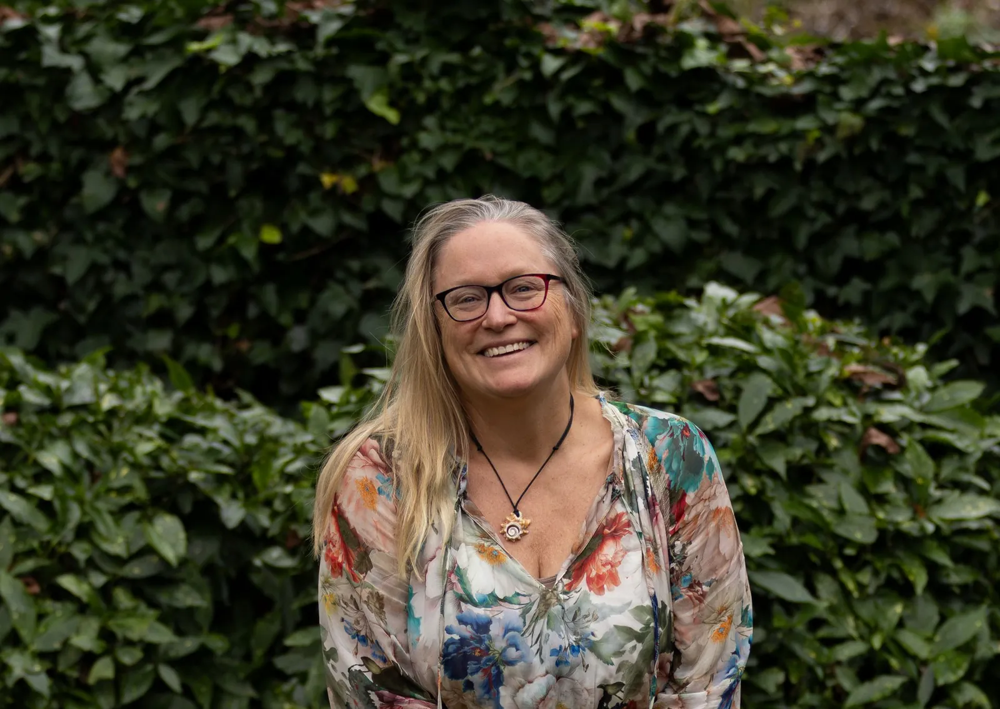

Meer rust - Meer helderheid - Meer verbinding - Meer jezelf
“Verandering begint wanneer je leert waarnemen wat er werkelijk in je leeft.”

Coaching, Qigong en workshops voor particulieren en organisaties
Ik begeleid mensen en organisaties om bewuster waar te nemen wat er werkelijk speelt. Mijn integrale aanpak combineert wetenschappelijk onderbouwde coachmethodieken, lichaamsbewustzijn, de wijsheid van Qigong en een persoonlijke, invoelende benadering. Zo ontstaat ruimte voor inzicht, beweging en duurzame verandering.
Ik kijk naar de mens als geheel. Niet alleen naar gedachten en gedrag, maar ook naar emoties, het lichaam en de verbinding daartussen. Juist door te zien en voelen wat er werkelijk aanwezig is, ontstaat ruimte om te zijn wie je in wezen bent.
Petra Koolen